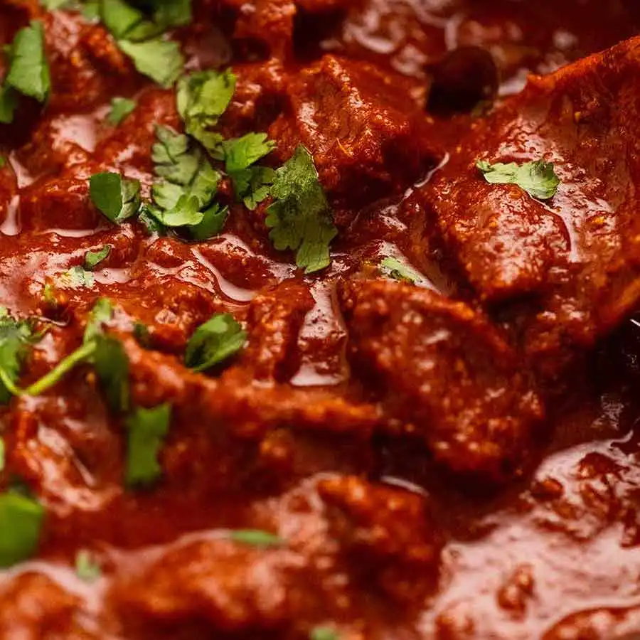

Beef Vindaloo

Description
Beef Vindaloo is a tasty dish. It does not have to be made
with beef. In fact, I have seen it made with fish,
chicken, lamb, and goat.
This dish comes from the Goa region of India and packs quite
a punch where spice is concerned. If you have the time, and enough water,
I highly recommend you try this dish!
Ingredients
- 1/4 cup distilled white vinegar
- 1/4 cup garlic paste
- 3 tablespoons ginger paste
- 2 tablespoons plain yogurt
- 2 tablespoons salt
- 1 tablespoon ground black peppet
- 1 tablespoon ground red pepper
- 2 pounds boneless beef chuck, cut into 1-inch cubes
- 1/4 cup vegetable oil
- 2 onion, chopped
- 4 roma (plum) tomatoes, chopped
- 1 cup water
- 2 tablespoons chopped fresh cilantro
Steps
-
Whisk the vinegar, garlic paste, ginger paste, yogurt, salt, black pepper, and red
pepper together in a mixing bowl. Mix in the beef cubes until evenly coated. Cover
the bowl with plastic wrap, and marinate in the refrigerator overnight (or at least 30
minutes).
-
Heat the vegetable oil in a large pot over medium heat. Cook and stir the onions in
the hot oil until they soften, turn translucent, and begin turning golden brown, about
10 minutes. Add the beef cubes, and cook, stirring frequently until the meat is no
longer pink on the outside, about 10 minutes more. Stir in the tomatoes and cook for
5 minutes.
-
Pour in the water, and bring to a simmer. Cover and reduce heat to medium-low; cook
until the beef is tender, about 40 minutes. Sprinkle with cilantro to serve.